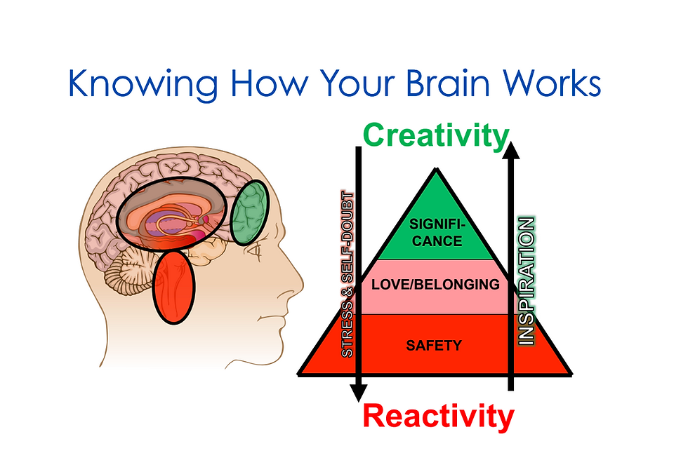
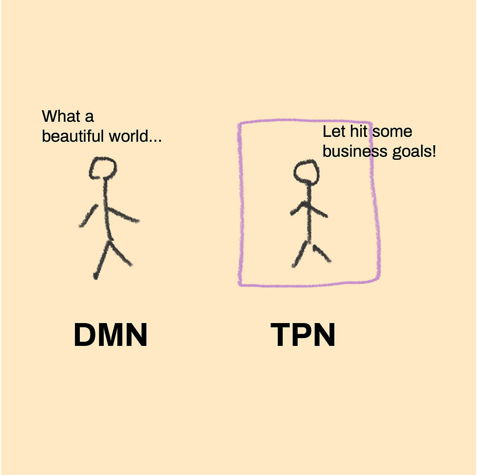
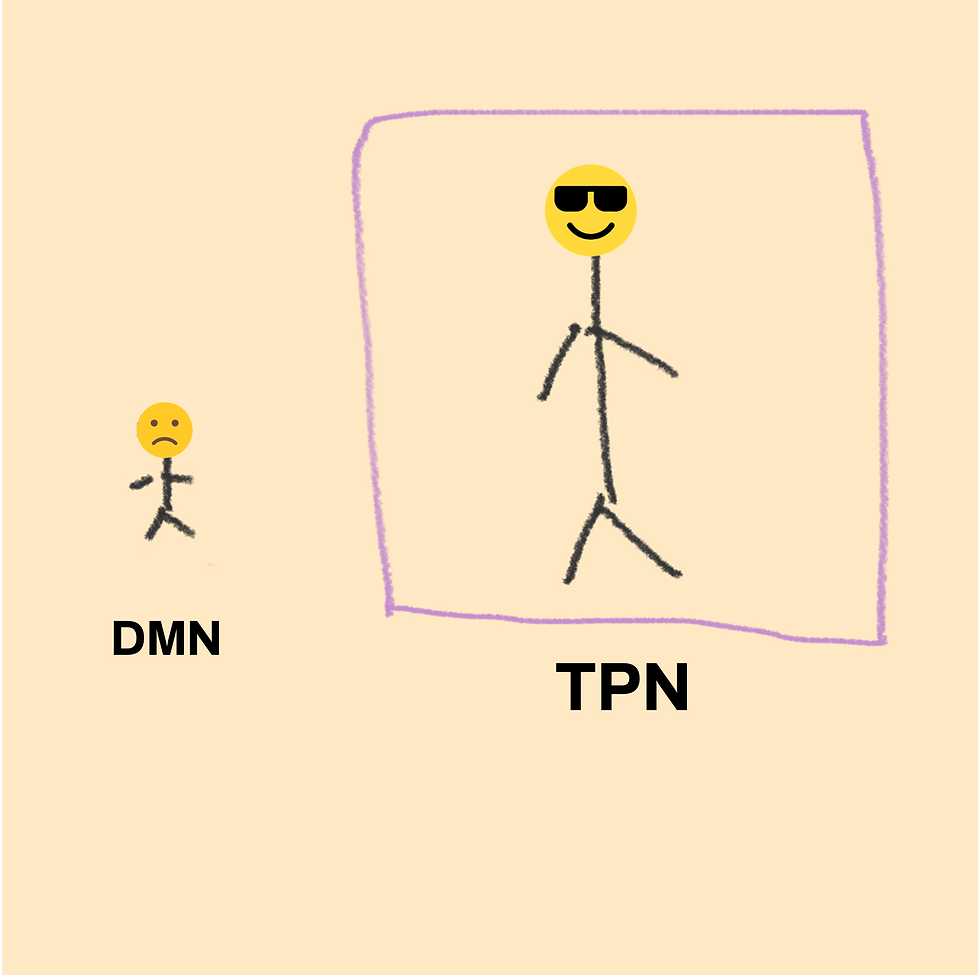
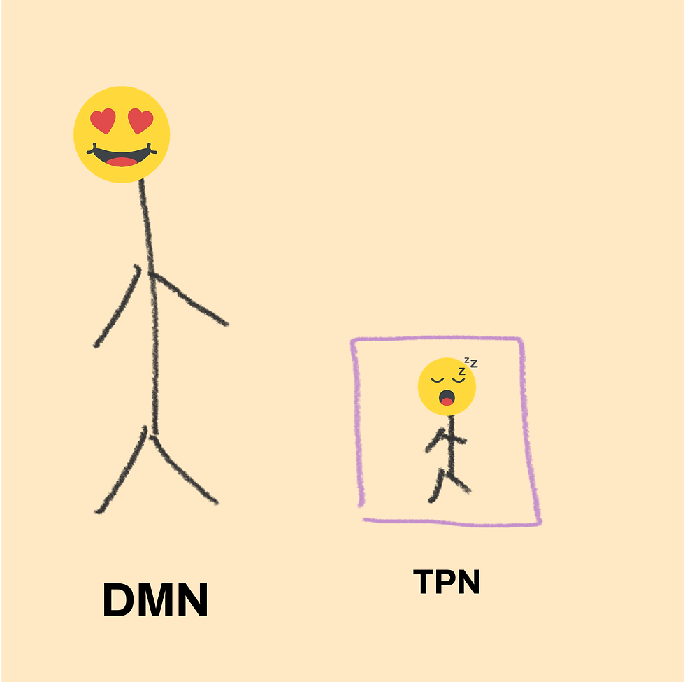
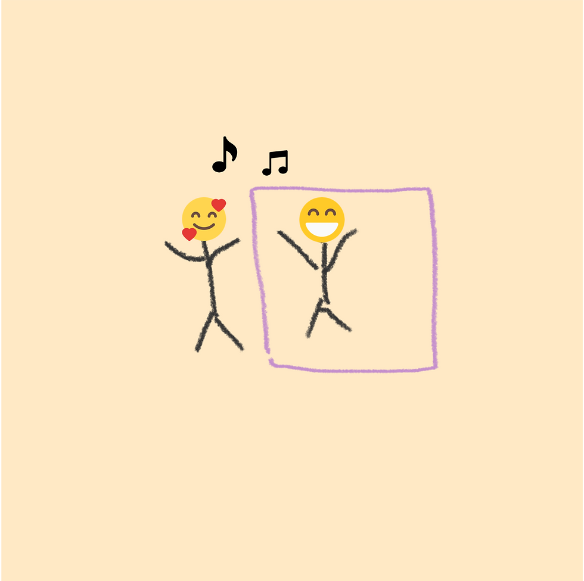
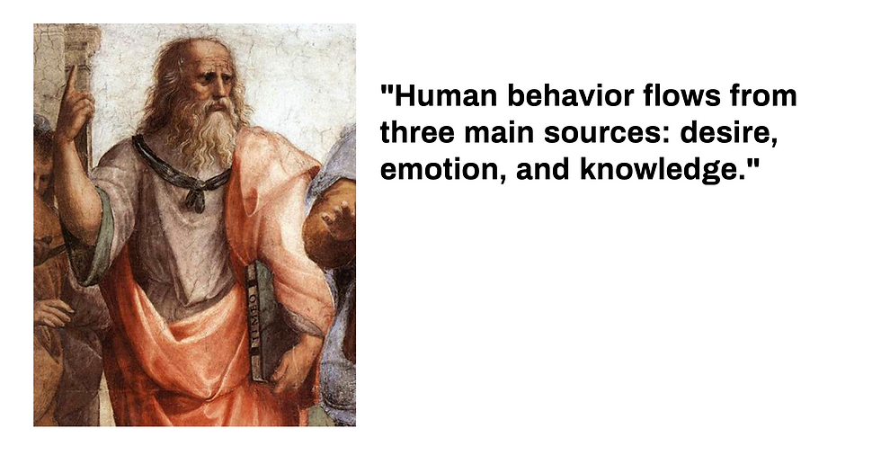
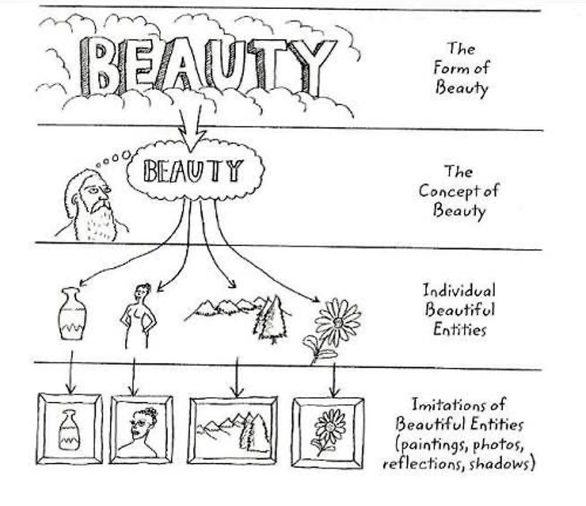
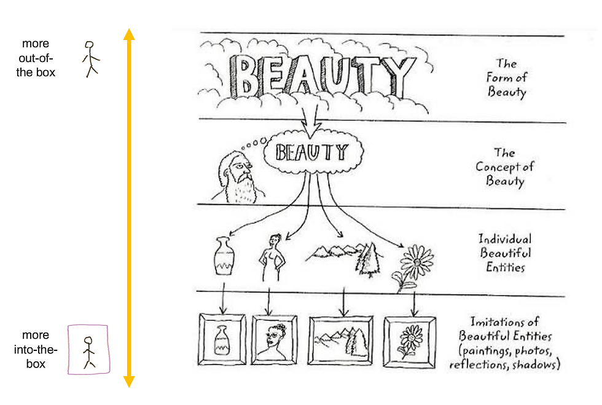

How neuroscience and philosophy teach us how to lead better and develop a culture
2022-06-15
Photo by Daniels Joffe on Unsplash
Recently, I shared s ome lessons I learned from creating an organizational culture consultancy , but I felt it would be more interesting to unravel some of those phrases. This is possibly part 1 of this series of reflections on organizational culture, conscious leadership and organizational transformation.
"The scarcest resource is not oil, metals, clean air, capital, labour, or technology. It is our willingness to listen to each other and learn from each other and to seek the truth rather than seek to be right." - Donella Meadows
Ever since I was little, I've always seen myself as a quiet rebel. From the rigidity of the school to the supposed pragmatism of companies, something bothered me. More than that, I was also bothered by the talk about politics that I heard all the time around me. Politicians were either idols or demons and politics itself was seen as something to be disliked and shunned. This quiet defiance can even be noticed by the way my fingers are in this photo:
Years later, I came to realize that a lot of this had to do with power dynamics, which were unclear and badly used. This led me to get involved in the Junior Enterprise Movement at university and, a few years later, it was one of the motivations for starting Tribo, a consultancy in organizational culture.
In the beginning, the work was much more driven by curiosity than experience. Pedro, Dario and I were all 25 years old and very interested in making the world a better place through companies. We carried out cultural diagnosis projects for companies that perceived a disconnect between the behaviors observed in people and the strategic challenges. I was surprised by how many of the leaders who hired us were very nervous or irritated when we presented the survey results. Not only was it bad to see people like that, it was also bad for the business because it made them not want to continue working with us.
It was because of this that we sought to learn more about how the human mind works. After all, it didn't seem very coherent that the same person who hired us to understand what wasn't working was the same person who was bothered by the results of that.
HEALTHY MIND, HEALTHY CULTURE
And that's when we met Daniel Friedland. As a physician and neuroscientist from the University of California, Danny (as we always call him) wrote a book called Leading Well From Witihin , where he connects neuroscience and mindfulness so that, by understanding the mind and brain, we can lead with more awareness. In addition to becoming a mentor and a great friend, his work was key for us to finally understand how to overcome the challenge of leaders frustrated with the culture and is, to this day, one of my favorite books.

Source: Leading Well From Within (Daniel Friedland)
I learned that, considering all the complexity of our brain, there are three regions that directly influence the way we lead:
Reptilian Brain : the most instinctive and primitive part of our brain. Within the evolutionary process, it was the part that came up first and that is concerned with things like survival, foraging, and reproduction.
Limbic System : region responsible for processing our emotions and behaviors. When we find ourselves in danger, for example, this region is encouraged to put us in fight-or-flight mode.
Neocortex : "newer" region in the evolutionary process, responsible for our a lot of our cognition, language and decision making. It is the part we use to exercise consciousness and, therefore, also the part used in the search for meaning, understanding and transcendence.
This reasoning is necessary here for a few reasons:
The way we react to what happens to us leads us to use different regions of the brain. If I see a specific situation as a threat, it is natural for the reptilian brain to be activated, generating stress and making me go into reactive mode, seeing aggression ("fighting") or running ("fleeing") as the only alternatives.
If I see the same situation as a challenge or an opportunity, the neocortex kicks in, the stress is controlled, and I am able to have more awareness to deal with the situation creatively, without having to attack or hide.
In either case, the decision will depend on how I deal with the emotions around me. If I submit to the fear I'm feeling, I'm possibly going to go into survival mode. If I learn to find meaning in the things that happen, it becomes easier to use awareness.
"Between stimulus and response lies a space. In that space lie our freedom and power to choose a response. In our response lies our growth and our happiness." - Viktor Frankl
The point here is: today, we know that it is possible to CHOOSE how we want to react to a given situation. The problem is that most of us have not been educated to make choices.
Think of a standard executive, that stereotype you've used a lot when putting photos in presentations .
At school, they couldn't choose anything. They'd arrive there and the subjects to be studied were already decided, and the pace and style of teaching for them and their colleagues would be the same. After years in elementary and high school, one day they were told, “Congratulations! Now you can choose an university course”. As they hadn't been educated to choose, it was a painful process.
Entering college, they thought it would be different there, but it was a mere illusion. After struggling to graduate, the world said, "Congratulations! Now you have a degree and you need to choose a career".
They ended up joining some company and found that their main task was to obey what the boss said. After years and years of obeying, one day they said, " Congratulations! You obeyed so well that now you can command".
Nobody ever taught me to command or choose, they thought. Still, they tried their best to conform to that environment. So they became an executive, someone who executes, who makes things happen. Handles tasks well, reasonably with ideas, and disastrously with emotions. And so a pattern is created that dominates most companies in the world.
You must be wondering where we are going with this. For that, I'm going to need to turn to neuroscience again here. Now, instead of talking about pieces of the brain, let's talk a little bit about how these pieces interact through neural systems. Two of them, relevant here.
One of them, very important, is the Positive Task Network (PTN) . Led primarily by the neocortex, this system is activated when we have something to do . When faced with a specific task, he will seek to analyze information and create focus so that we can accomplish something. You know when someone says we need to have ideas out of the box? The box, in this case, is this system. Not by chance, it is the system that dominates the day to day of executives.
The other system is the Default Mode Network (DMN) . Utilizing various regions of the brain, it is our most natural, relaxed state. It is the system that allows us to abstract, ramble, have ideas and think about other people. It's the famous "think outside the box". It is the system that allows us to develop our authenticity and create unique, original things.
The recent discovery is that these two systems have a specificity: they do not work at the same time. To use one, I need to rest the other. It goes kind of like this:

Culturally, there is a gravitational pull that causes us to be educated towards the box. The supposed need to produce things and make the economy grow makes schools (and, soon after, companies) great trainers of TPN, great supporters of the box. This isn't necessarily bad. If it weren't for the box, we would be unable to create all the wonders that humanity has been able to produce so far and we wouldn't know what progress is. The box is for us to put our curiosity to the test and make it happen.
The problem is that we don't train DMN. You know how they say schools kill creativity ? That's exactly why.

It is also normal to see some people who rebel and will do the exact opposite. They are given adjectives such as unproductive, procrastinating, or overly idealistic.

I like to believe that in both cases it is possible to be happy. But I like even more to exercise both and discover who we are when we are fully human beings.
This paradox, between thinking and doing, dominates us all the time. It's as if our mind has an out of control switch and we end up preferring to lock in one mode just so we don't have to question things around us.
DANCING WITH THE CULTURE
Now, we can connect some dots. Remember the leaders who were irritated by analyzes of the company's culture? Now it is possible to understand their irritation. For that, a little empathy will come in handy.
Think of yourself leading a company under pressure from targets, investors and customers. All you want most is for things to work out and that goes for the culture too. You want to see people working well, aligned and productive. You depend on them for this and it's very frustrating when they don't behave as you would like. You feel incapable of leading and leading the team to results. Or, if it succeeds, it does so at great emotional cost. You are completely hijacked by the box.
These leaders, dominated by the survival instinct (not that their lives are threatened, but their social and even financial status) and by TPN (the box) become, therefore, people incapable of looking outside, understanding emotions and feelings. and realize that culture is in constant motion. Because people are constantly on the move.
To make this task even more challenging, there is another important finding regarding our behaviors. When we have our beliefs questioned, our brain is tricked into believing that this questioning is a direct threat to our survival , making us give the reptilian brain all the power to resolve the situation. Countless times I've seen leaders who have always believed in the power of standardization, uniformity and low error tolerance become extremely irritated when reviews indicated that the company should be more flexible in working style or more open to trial and error to create new solutions. Their brain interprets this in the same way as if their religions were being questioned or if someone was trying to beat them with a crowbar. Literally .
Maybe by now you're starting to lose hope, but now it gets interesting. Because the question is not how do we convince these leaders that change is important. The question is how can we promote dialogue so that people, including leaders, understand how they can reorganize themselves, when necessary, to adapt to changes. And, here, I invite you, leader (and I know you are) to do this process from the inside out.
Recall our friends DMN and TPN, out of the box and in the box respectively. They are like day and night , like inhalation and exhalation, like systole and diastole. Opposite movements, but that cannot live without each other.
When we have internal conflicts, paradoxes or dilemmas that bother us, it is normal to seek comfort in the idea that a solution is possible, a correct answer against a wrong one. However, this usually leads to frustration and the feeling that an important part of us has been oppressed by a more important one. It doesn't have to be that way. Instead of looking for one alternative over the other, we can make them interact more harmoniously. In other words, life is not a problem to be solved, it is a song to be danced to.

When this happens, we know that our ideas and even some beliefs can be transformed according to what we learn and the context of each situation. In the same way that we stopped believing that the earth was round after the first people came from outside, we are also able to realize that the way companies organize themselves also need to change when faced with a new worldview.
TRANSFORMING PHILOSOPHY INTO LEADERSHIP
As we learn to deal with constant ambiguity, we develop a very relevant skill for any leadership: facilitation . Helping people and groups to create a vision and shared actions is the result of those who deal well with this in and out of the box and are able to positively influence other people to also achieve this. No wonder this skill is so often mentioned when talking about the future of work . Fortunately, we had considerable prior experience with facilitation, which turned out to be useful for virtually every cultural transformation project we did.
To illustrate how this works, I will invite Plato. There's a quote attributed to him that fits well with the subject here:

Can you see the relationship between the three sources and the three brain regions that we explored earlier?
He is not one of the greatest philosophers in history by chance. His work is highly applicable and useful to various issues of life and society and this also applies to organizational culture. One of his sets of philosophical concepts is the Theory of Forms. To make it easier, think of a dog.
Maybe you imagined something like this:

Other people may have imagined another dog:
And other people may even have imagined a drawing of a dog:
Still, if you look at all three images, they'll all lead you to the conclusion that you're looking at dogs. So, how do you describe a dog? It could be something like:
Has 4 legs
Has a tail
Furry
Relatively smaller than a person
This doesn't work very well, for reasons of:

That's when Plato understood that for everything in life there is an ideal, as if it were the absolute truth of something, but that it is not possible to describe it perfectly. For this, to bring the ideal to reality through a concept, an individualization and imitations. Imagine, for example, the word "beauty".

Unlike the noun "dog", which is concrete, the noun "beauty" is abstract. This means that, as much as there is an ideal of beauty, each person can see beauty as different things and manifest it in different ways. Imagine, now, if, instead of talking about beauty, we started to apply this to typical organizational values, such as " innovation ", " commitment ", " excellence " or " humanization ". If each person interprets each value differently, chaos reigns.
When this happens, we have what we call Low Context Culture (LCC) . When people have very different understandings of the same words, it is a sign that the organization is weakened by the inability to communicate and align people. In a High Context Culture (HCC) , few words are needed to generate much understanding. Therefore, it is a constant task of leaders to fine-tune communication. As much as this can be done in many ways, the ability to dialogue is key in this process and it can start with understanding that the context varies according to the way we approach the situation. Calling our friends outside (DMN) and inside the box (TPN) again, we can see that these two systems of the mind apply in Plato's theory:

This shows us that culture development challenges can be at different levels and require different approaches:
1. Challenge of ideal : when people are uninspired or disconnected from themselves or the organization, it is time to bring exercises of presence and/or contemplation.
A retreat with the team or leaders, for example, can go down very well. Getting people to a space outside of work and without big deadline obligations helps to get out of the box
A provocative talk to bring some positive discomfort, as long as it's done well. Instead of looking for motivational speeches, seek to bring in people who, in some way, are able to inspire the group or make them reflect on something.
2. Challenge of concept : when there is no shared understanding of the company's values or principles , a frank and open dialogue about how each person sees the situation becomes imperative to ensure that there is understanding without necessarily having unproductive conflicts. Success here is people being able to look at a word and give the same explanation.
A facilitated conversation where people can feel safe to express their worldviews then helps to create a convergence of understanding.
People can be interviewed by a leader who is able to do the same process individually, offering listening to open this field of psychological safety.
There are dozens of tests that can help. You can use the Personal Values Assessment for a simpler feedback or the Leadership Circle for a broader approach, just to name a few.
3. Challenge of materialization : when people have a shared understanding, but it is difficult to develop the desired culture , it is important to realize how much the cultural artifacts are managing to translate this. Understand by cultural artifacts things like organizational structure, meeting dynamics, office layout, vocabulary, and even dress code. It's all here makes people understand the culture.
There are several ways to list and analyze artifacts. The OS Canvas , for instance, can be helpful in bringing awareness of this.
4. Challenge of Replication : When the company grows fast or when people leave and enter the team , it is important to know how the culture can be positively imitated. For that, constraints are needed that, like the box, allow us to focus on what really matters. For this, the exercise here is to eliminate aspects that do not represent the desired culture and ensure that things run as smoothly as possible.
Preparing a Culture Guide can be an effective action for this challenge. Although it is a job that requires some level of expertise, you can be inspired by some that have become famous, such as Netflix's and HubSpot's .
Among the elements of a good Culture Guide, you can choose to elaborate at least a Manifesto like this one from Johnson & Johnson or a list of non-negotiable rules like the one from Brasil Júnior .
FROM KNOWLEDGE TO WISDOM
Knowing that the culture is built in several layers is mainly useful for making the task less complex. The vertigo that currently happens in the world of work can be seen as pure confusion or as a storm that clears the sky. The point here is that knowing how to use conscience in our favor, the process of evolving a culture is no longer an arduous task and becomes a challenge that only requires skills for which we were not educated. However, there is a way to reverse this by learning more about ourselves, how we think, feel and do things. After all, organizational culture is just the product of our behaviors and interactions.
In short:
Know how your mind works. It can be your greatest ally or a fierce opponent. If you're not getting along, seek out some form of therapy. If you are, too. After all, you never know.
Leading is often dancing with your own beliefs. By looking at the situation from another angle, you make room for a new culture to be born without leaving behind what you value.
Learn about facilitation. Or hire good facilitators, but don't give up that competence.
Remember Daniel Friedland I mentioned above? In late 2020 he was diagnosed with a brain tumor and knew it would shorten his life. When he called me to break the news, I was speechless and all I could do was ask him questions. At the end, I asked, almost already knowing that the answer would be nothing, what I could do for him in that difficult moment. As always, he surprised me when he said, "If you are able to show for yourself the compassion you are showing for me, then I will know that I have fulfilled my mission with our friendship."
In October of last year, he passed. And today, having somehow managed to synthesize what I learned from him, I remember what a privilege it was to have him as a mentor and I simply pass it on. If you are able to cause the same evolution in yourself that you want to cause in your company's culture, then I think you got it.